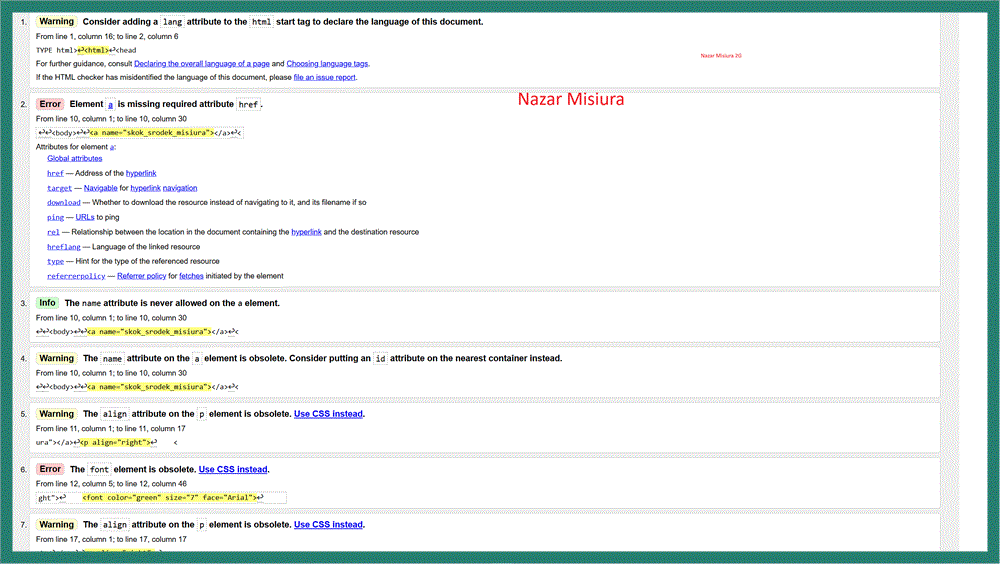
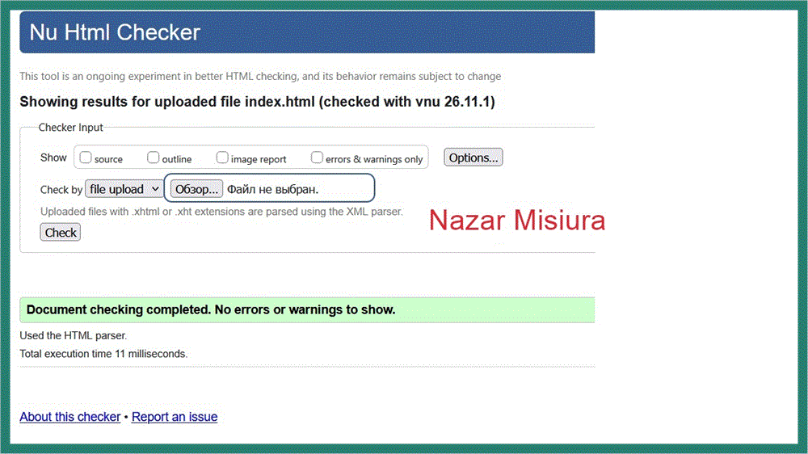

Walidacja strony WWW
Walidacja strony HTML to sprawdzenie, czy kod dokumentu jest zgodny ze standardem HTML, ma poprawną strukturę i nie zawiera błędów składniowych.
Walidator to narzędzie, które analizuje kod strony i wskazuje błędy oraz ostrzeżenia. Do sprawdzenia użyto Nu Html Checker W3C.
Raport walidatora przed poprawą

Wynik walidacji po poprawie
